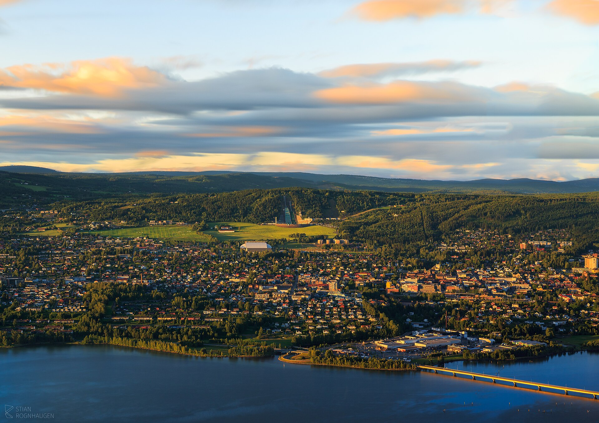

Стоп 1
Lillehammer
Зачем сюда: это лучший первый длинный стоп после Oslo. Не ради галочки, а чтобы нормально поесть, пройтись и не чувствовать день как одну бесконечную трассу.
Что делать на остановке
- Сесть на нормальный завтрак или ранний обед, а не перекусывать на заправке.
- Пройтись 15–20 минут по центру, чтобы размяться после первых часов дороги.
- Спокойно перезагрузиться перед следующей длинной частью маршрута.